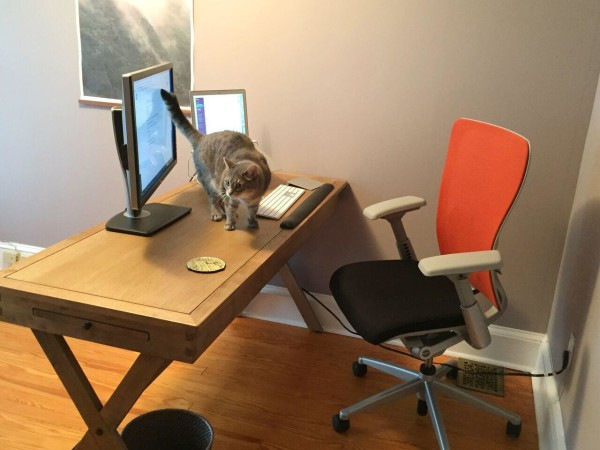

We are big believers in distributed teams at Screenleap. In our previous posts, we wrote about the lessons we learned and the tools we use to stay connected and productive. To gain more insights about how successful remote companies work, we’re launching a series of interviews which is focused on
- learning how successful remote workers do their jobs (working styles, tools)
- how distributed teams build their companies (tools, culture)
This is the first interview of the series.
Len Markidan heads up marketing at Groove, where he focuses on helping startups and small businesses build better relationships with their customers. Groove’s entire team works remotely.
In this interview, he elaborates on his remote working style and how Groove’s distributed team works together.
Hi Len, thank you so much for taking the time to chat with us. Please tell us a little about yourself.
I’m the Head of Marketing for Groove, where we work on building the best customer service tools for small businesses. Our whole team is remote: I work from my home office in Baltimore, Maryland.
I also write about home office productivity, work/life balance, and happiness on my blog Home Office Hero.
How long have you been working remotely? Why did you choose to work remotely?
For around five years now. In 2010 I was living in San Francisco, doing marketing for a startup, and taking the bus downtown every day to our office on the 19th floor of a soulless corporate skyscraper. I loved the work, but hated the commute. When the company got acquired and I decided to start my own business, working from home was an easy choice.
How does your typical day look like?
I wake up at around 6am and make coffee while my wife gets ready to leave (she just went back to school to study medicine). She heads out at around 7, and that’s when I tackle my biggest task of the day—usually that’s a blog post or other big content piece. It’s still early enough that I don’t get interrupted by emails or Slack notifications. I’ll typically work through lunch, eating at my desk. Because I start early, I typically run out of creative steam around mid-afternoon, so I take a gym break then before coming back and dealing with more mindless administrative stuff like responding to emails and getting things in order for the next day.
I try not to work past 6pm or so, but I’m far from perfect. We have dinner around then, and then I’ll either read or mindlessly goof off on the Internet, depending on how much impulse control I have that day. I like to take a walk before bed, an awesome head-clearing habit I started doing after reading Joel Gascoigne’s post about it.
What apps do you use? What apps can’t you live without?
For work, I spend the overwhelming majority of my time in just four apps: Google Docs for writing and editing, Slack for chatting with the Groove team, Trello for managing projects and to-do’s, and Mailplane for easy switching between my various Gmail accounts. For non-work stuff, I love Headspace for guided meditation and Simplenote for not having to rely on my less-than-stellar memory.
How does Groove’s team overcome the collaboration challenge (like explaining complex concepts or issues such as the steps for reproducing a bug) while working remotely?
As more and more teams have started to work remotely and more and more tools have been developed for them, that challenge has really diminished. There’s very little that you can’t explain or convey to a remote coworker. Screen-sharing apps (like Screenleap) make that really easy.
What is the biggest benefit of working remotely? What’s the biggest challenge?
The biggest benefit for me is flexibility. I get to work the hours that I’m most productive, I don’t have to waste time commuting and I can work from anywhere I’d like to.
The biggest benefit for our team is recruiting. We can hire the best talent, regardless of where they are
Today, the biggest challenge remote work presents is no longer collaboration or communication, but culture. Being in one place together helps culture develop naturally through the connections and conversations you have day in and day out. You have to work hard to recreate that dynamic online.
So how does Groove develop a culture when everyone is remote?
The most important thing that we do to develop culture is try to replace the social element of a physical office with a “virtual water cooler.”
For us, that virtual water cooler is a room in Slack that’s reserved for non-work-related conversations. There’s a lot of back-and-forth banter, folks post photos of their pets, the music they’re listening to, random links from the Internet—things like that.
Every week, we also have a team poker tournament on ReplayPoker.com. We take an hour off and do a group call on Skype while we play poker. It’s an awesome way to be social and get to know each other while having fun. And of course, there are prizes for winners 🙂
That’s interesting. How do you think it will scale as the company gets bigger?
It’s challenging to keep culture intact as you grow, but that’s why it’s so important for us to spend time investing in building a strong cultural foundation now.
When the culture becomes deeply ingrained across a small team, it’s easier for each member of that small early team to help keep the culture alive as the company expands.
We also take cultural really seriously when we hire. And that must continue, whether you’re hiring employee number 10, 100 or 1,000.
That’s great, Len. Coming back to your working style, how do you minimize distractions while working from home?
The most important thing for me is to take my own willpower (or lack of it) completely out of the equation. I use StayFocusd, a Chrome extension that blocks any site I tell it to (e.g., Facebook, etc…) during the hours I want to be working. It’s amazing how much more productive this tool makes me.
Any advice you would give to others who are considering working remotely?
Make sure that you’re self-aware enough to know your shortcomings, and put systems in place to overcome them. If you know that you’re easily distracted, remove the distractions. If you know that you have trouble separating work and life and tend to work long hours if left unchecked, set “off-limits” times for your office and tell whoever you live with to keep you accountable for sticking to them.
Oh, and put on some pants.
That’s a great suggestion :D. We would love to see your remote work setup. Could you share it with us?
Sure, here’s my desk, along with my officemate Zoe:

Awesome :). If there were one thing you could change about current remote work scenario, what would you change?
I’m lucky that I’ve been able to pretty much build my work life as I want it to be, so there isn’t anything I can think of that I’d change. With that said, an espresso machine mounted behind my desk would be nice.
And the last question: What app for remote work you’d love to have but doesn’t exist?
I’d pay any amount of money for an app that blasted Nickelback (at an uncomfortably high volume) at Comcast HQ every time the Internet at my house goes down. I suspect connectivity would start looking a bit better around here fast.
It was awesome talking to you, Len. Thank you so much for all the remote work tips and your time. We really appreciate it!
{kind=link}
{kind=link}
{kind=link}